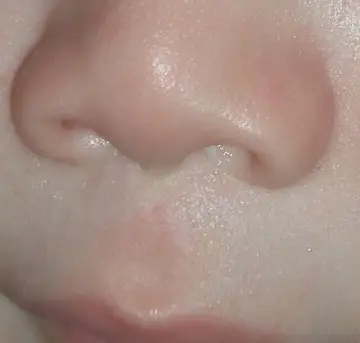

DX.9 — Troubles du spectre de l’alcoolisation fœtale
Les troubles du spectre de l’alcoolisation fœtale (TSAF) forment l’une des principales causes évitables de troubles neurodéveloppementaux en SuisseS1. Le médecin interroge chaque mère sur l’alcool, mesure le périmètre crânien (PC) et les fentes palpébrales, puis organise une évaluation multidisciplinaire et un soutien précoceS1S2.
Ce cours DX.9 reprend les sources citées ; aucun médecin ne l’a encore validé cliniquement.
1. Définition
Les TSAF regroupent l’ensemble des atteintes causées par l’exposition prénatale à l’alcool, du syndrome d’alcoolisation fœtale (SAF) complet jusqu’aux troubles purement cognitifs ou comportementauxS1. Le spectre comprend quatre diagnostics : le SAF, le SAF partiel, les malformations congénitales liées à l’alcool et les troubles neurodéveloppementaux liés à l’alcoolS1.
2. Épidémiologie (Suisse, puis Europe)
La Suisse figure parmi les pays à prévalence élevée, puisque les TSAF y toucheraient 2,6 % des personnes âgées de 0 à 16 ansS1. L’incidence annuelle suisse est estimée à 170 à 425 SAF et à 1700 TSAF, si bien que tout pédiatre en rencontreS1. Les chiffres suisses et européens et la consommation d’alcool des femmes précisent ces ordres de grandeur, tandis que les repères historiques datent le message d’abstinence.
Le SAF ne représente qu’environ 10 % des patients, car la majorité présente des atteintes cognitives ou comportementales sans dysmorphieS1. Le sous-diagnostic reste important : l’âge moyen au diagnostic du SAF atteint 3,3 ans, et seuls 6,5 % des cas sont reconnus à la naissanceS1.
Chiffres utiles : prévalence et incidence
| Donnée | Valeur | Population et période | Source |
|---|---|---|---|
| Prévalence des TSAF | 2,6 % des 0 à 16 ans | Suisse, estimation internationale | S1 |
| Pays avec prévalence supérieure à 1 % | 76 pays sur 187, dont la Suisse | Méta-analyse mondiale | S1 |
| Incidence annuelle du SAF | 170 à 425 naissances | Suisse | S1 |
| Incidence annuelle des TSAF | 1700 naissances | Suisse | S1 |
| Naissances dans une situation à risque | 7,5 % des enfants nés vivants | Suisse, estimation de l’Office fédéral de la santé publique (OFSP) | S1 |
| Prévalence en Croatie et en Irlande | 5,3 % et 4,8 % | Europe, taux les plus élevés | S1 |
| Prévalence dans la Région européenne de l’OMS | 1,98 % | Europe | S3 |
| Incidence des TSAF | Environ 1,77 % des naissances vivantes | Allemagne | S3 |
| Prévalence estimée du SAF | 8 pour 1000 naissances vivantes | Allemagne, recommandation de 2013 | S4 |
| SAF reconnus à la naissance | 6,5 % ; deux tiers avant 5 ans | Littérature citée par Paediatrica | S1 |
Le chiffre suisse provient d’une extrapolation internationale et non d’un registre national, ce qui impose de le lire comme un ordre de grandeurS1.
Les écarts entre la Suisse, l’Allemagne et l’Écosse tiennent aussi aux systèmes de diagnostic, qui ne classent pas les mêmes enfantsS2.
Consommation d’alcool des femmes en âge de procréer en Suisse
| Indicateur | Valeur | Contexte | Source |
|---|---|---|---|
| Femmes en âge de procréer qui boivent | Environ 75 %, dont 44 % plus d’une fois par semaine | Enquête suisse sur la santé publiée en 2018 | S1 |
| Ivresse ponctuelle selon l’OFSP | 4 verres standard en une occasion chez la femme | Un quart des 15 à 24 ans en rapporte un épisode par mois | S1 |
| Consommation chronique | 2 verres standard par jour chez 5 % des femmes | Femmes en âge de procréer | S1 |
| Abstinence pendant la grossesse | 60 % des accouchées | Maternité du Centre hospitalier universitaire vaudois (CHUV), étude publiée en 2011 | S1 |
| Abstinence selon l’origine | 74 % chez les étrangères contre 57 % chez les Suissesses | Même étude lausannoise | S1 |
| Abstinence selon l’âge | 70 % avant 30 ans contre 54 % après | Même étude lausannoise | S1 |
| Hommes qui gardent leur consommation pendant la grossesse de leur conjointe | Plus de 70 % | Étude suisse publiée en 2013 | S1 |
L’ivresse ponctuelle augmente chez les adolescentes, ce qui expose des grossesses encore ignorées à des pics d’alcoolémieS1.
Repères historiques
| Date | Événement | Portée | Source |
|---|---|---|---|
| 1899 | Sullivan observe 600 enfants de mères alcooliques emprisonnées | Il conclut à un effet toxique direct sur l’embryon | S1 |
| 1968 | Lemoine publie la première description du syndrome | Naissance du concept en France | S1 |
| 1973 | Jones décrit le SAF aux États-Unis | Diffusion internationale | S1 |
| 1981 | Les sociétés médicales prônent une réduction de la consommation | Message encore ambigu | S1 |
| 2005 | L’abstinence complète devient la recommandation | Message actuel | S1 |
| 2016 | Dernière mise à jour des classifications citées par Paediatrica | Critères diagnostiques révisés | S1 |
Cette chronologie montre que le message d’abstinence complète reste récent, ce qui explique en partie la persistance des idées reçues sur une consommation modéréeS1.
3. Physiopathologie
L’alcool traverse librement le placenta, si bien que l’alcoolémie du fœtus égale celle de sa mère en 2 heuresS1. Le fœtus élimine mal l’éthanol, car il le renvoie vers la mère ou le stocke dans le liquide amniotique, qui sert alors de réservoirS1. Les mécanismes cellulaires et la relation entre dose, moment et atteinte expliquent la microcéphalie et les troubles du développement.
Les atteintes structurelles naissent surtout au premier trimestre, alors que le cerveau reste vulnérable pendant toute la grossesseS1. Le pic d’alcoolémie compte davantage que la durée d’exposition, ce qui rend l’ivresse ponctuelle du début de grossesse particulièrement dangereuseS1.
Mécanismes de la toxicité de l’alcool sur le cerveau en développement
| Mécanisme | Cible | Conséquence clinique | Source |
|---|---|---|---|
| Métabolisme en acétaldéhyde | Neurones et cellules des crêtes neurales | Apoptose, microcéphalie, dysmorphie faciale | S1 |
| Trouble de la migration cellulaire | Cortex en formation | Troubles cognitifs et comportementaux | S1 |
| Altération de la morphogenèse | Corps calleux | Agénésie chez 6 % des SAF contre 0,1 % de la population | S1 |
| Retard de croissance ciblé | Cervelet | Troubles de la coordination, de l’équilibre et de la marche | S1 |
| Mécanismes épigénétiques | Méthylation de l’ADN, histones, ARN régulateurs | Vulnérabilité accrue au stress, parfois durable | S1 |
| Action tératogène directe | Tous les organes | Atteintes palatines, cérébrales et cardiaques surtout | S1 |
L’agénésie du corps calleux touche aussi 2 à 3 % des personnes avec trouble du développement, si bien qu’elle ne signe pas à elle seule l’alcoolS1.
Dose, moment de l’exposition et atteinte
| Exposition | Effet décrit | Portée | Source |
|---|---|---|---|
| Toute consommation pendant la grossesse | Aucun seuil sans risque identifié | Fonde la recommandation d’abstinence | S1, S2 |
| Au-delà d’un verre par jour | Effet seuil sur la croissance | Étude lausannoise | S1 |
| 2 à 4 verres par jour | Baisse significative du poids de naissance | Étude lausannoise | S1 |
| Plus de 3 verres par jour, quel que soit le trimestre | Risque de retard de croissance intra-utérin triplé | Étude italienne citée | S1 |
| Plus de 1 à 2 unités par jour | Petit poids de naissance, prématurité, petit âge gestationnel plus fréquents | Experts britanniques cités par le Scottish Intercollegiate Guidelines Network (SIGN) | S2 |
| Ivresse ponctuelle des premières semaines | Effet cérébral au moins égal à une exposition prolongée | Études animales | S1 |
L’absence de relation dose-réponse nette entre consommation et atteinte neurodéveloppementale ne permet pas de rassurer une mère sur une « petite » quantitéS1.
4. Démarche diagnostique
La démarche réunit quatre éléments : l’exposition prénatale, les trois signes faciaux, la croissance et l’atteinte du système nerveux centralS1S2. Le SIGN demande aussi de considérer, et si possible d’exclure, une cause génétique avant de retenir un TSAFS2. Les étapes retiennent une fente palpébrale à 2 déviations standards sous la moyenne, puis les diagnostics différentiels écartent les autres syndromesS2.
Chez le nourrisson microcéphale, le médecin recherche d’abord l’alcool par l’anamnèse, puisqu’aucun biomarqueur fiable n’existe encoreS1. Il distingue ensuite une microcéphalie avec dysmorphie typique d’une microcéphalie isolée, qui oriente plutôt vers une cause génétique ou infectieuseS2.
Étapes de la démarche diagnostique
| Étape | Action | Seuil ou repère | Source |
|---|---|---|---|
| 1. Exposition | Anamnèse maternelle, dossier obstétrical, questionnaires validés | Exposition confirmée, inconnue ou absente | S1, S2 |
| 2. Visage | Fentes palpébrales mesurées, philtrum et lèvre classés | Fente à 2 déviations standards (DS) ou plus sous la moyenne ; philtrum et lèvre au rang 4 ou 5 | S2 |
| 3. Croissance | Poids, taille et PC reportés sur les courbes | Retard intra-utérin ou postnatal ; microcéphalie | S1 |
| 4. Système nerveux | Évaluation neurodéveloppementale dans au moins trois domaines | Atteinte sévère : 2 DS ou plus sous la moyenne | S2 |
| 5. Génétique | Arbre familial sur trois générations, consanguinité | Orientation génétique si tableau atypique | S2 |
| 6. Synthèse | Diagnostic ou désignation « à risque » | Rapport écrit remis à la famille | S2 |
Le SIGN propose un formulaire d’évaluation qui réunit histoire obstétricale, développementale, médicale et sociale, ce qui évite d’oublier une rubriqueS2.
Diagnostics différentiels d’une microcéphalie avec dysmorphie ou retard
| Diagnostic | Argument | Examen ou démarche qui tranche | Source |
|---|---|---|---|
| Syndrome génétique mimant le SAF | Chacun des trois signes faciaux existe dans d’autres syndromes | Avis de génétique clinique | S1, S2 |
| Phénocopie du SAF | Tableau de SAF sans aucune exposition | Exposition confirmée absente | S2 |
| Microcéphalie primitive génétique (DX.7) | Microcéphalie dès la naissance, visage peu dysmorphique | Séquençage génétique | S2 |
| Cytomégalovirus congénital (DX.8) | Microcéphalie néonatale, surdité | Recherche virale précoce | S2 |
| Trouble du déficit de l’attention isolé | Hyperactivité sans exposition ni atteinte multiple | Évaluation neurodéveloppementale | S1 |
La présence des trois signes faciaux sans microcéphalie impose un avis de génétique clinique, selon le SIGNS2.
5. Anamnèse ciblée et drapeaux rouges
L’anamnèse reste l’élément essentiel du diagnostic, mais l’alcool demeure un sujet tabou qui sous-estime les situations à risqueS1. Le médecin recherche donc chez chaque mère tous les toxiques, avant et pendant la grossesse, avec des questionnaires validésS1. Les questions ciblées, les facteurs de risque et les drapeaux rouges guident l’entretien.
Le SIGN exige de documenter quantité, type de boisson, mode et fréquence de consommation, car la dose par occasion semble compter davantageS2.
Questions ciblées et lecture des réponses
| Question | Réponse qui oriente | Interprétation | Source |
|---|---|---|---|
| Avez-vous bu de l’alcool avant de vous savoir enceinte, puis pendant la grossesse ? | Oui, même par épisodes | Exposition confirmée si l’aveu est fiable | S2 |
| Combien de verres, de quelle boisson, à quelle fréquence ? | Ivresses ponctuelles | Pics d’alcoolémie, les plus toxiques | S1, S2 |
| Un traitement pour l’alcool ou un problème légal lié à l’alcool a-t-il eu lieu ? | Oui | Source fiable de confirmation | S2 |
| Un frère ou une sœur a-t-il un TSAF ? | Oui | Facteur de risque pour l’enfant suivant | S2 |
| Comment l’enfant mange-t-il, dort-il, se calme-t-il ? | Mauvaise alimentation, sommeil perturbé, irritabilité | Signes du nourrisson exposé | S2 |
| Le développement suit-il les étapes attendues ? | Retard de langage ou de motricité | Atteinte neurodéveloppementale | S1 |
Le dépistage s’appuie sur des questionnaires validés, comme le T-ACE, le TWEAK (questionnaire de dépistage de la consommation à risque), l’AUDIT-C et le 4P’s PlusS1.
Facteurs de risque d’une grossesse exposée à l’alcool
| Facteur | Précision | Source |
|---|---|---|
| Profil sociodémographique | Âge supérieur à 30 ans, études universitaires, célibat | S1 |
| Antécédents psychiatriques | Dépression sévère, état de stress post-traumatique | S1 |
| Violences subies | Violence physique, émotionnelle ou sexuelle | S1, S2 |
| Addictions | Toxicomanie, tabagisme actif, alcool précoce ou ivresses ponctuelles | S1 |
| Entourage | Consommation du partenaire, alcool dans la famille | S1, S2 |
| Contexte de la grossesse | Absence de contraception, grossesse non planifiée | S2 |
| Antécédent obstétrical | Naissance antérieure d’un enfant avec TSAF | S2 |
| Accès aux soins | Faible revenu, accès limité aux soins | S2 |
La consommation du partenaire représente un facteur sur lequel une action de prévention reste réalisableS1.
Drapeaux rouges et conduite
| Drapeau rouge | Risque | Conduite | Source |
|---|---|---|---|
| Microcéphalie avec les trois signes faciaux | SAF même sans atteinte encore mesurable | Diagnostic possible dès la petite enfance | S2 |
| Exposition confirmée sans critère complet | Trouble neurodéveloppemental à venir | Désignation « à risque » et surveillance du développement | S2 |
| Symptômes psychiatriques ou conduite à risque | Alcool, drogues, mise en danger, suicide | Pédopsychiatrie rapidement | S3 |
| Troubles visuospatiaux | Atteinte visuelle méconnue | Examen ophtalmologique | S3 |
| Mère qui boit encore | Exposition des grossesses suivantes | Consultation d’addictologie et soutien | S1 |
La mère peut éprouver une forte culpabilité, si bien que l’équipe veille à ne pas la stigmatiser et lui propose un soutienS1.
6. Examen physique ciblé, région par région
L’examen suit les organes, car l’alcool peut toucher presque tous les chapitres de la classification internationale des maladiesS1. Une fenêtre décrit chaque région : la croissance et le crâne, le visage, les yeux et les oreilles et le cœur et l’abdomen. Deux autres fenêtres décrivent les membres et le squelette puis le système nerveux et le comportement.
Croissance et crâne
| Geste | Constat | Interprétation | Source |
|---|---|---|---|
| Peser et mesurer, reporter sur les courbes | Retard intra-utérin et/ou postnatal | Critère de croissance du SAF | S1 |
| Mesurer le PC | Microcéphalie, parfois isolée sur un seul paramètre | Atteinte cérébrale ; critère pour le jeune enfant | S1, S2 |
| Situer le PC par rapport à la moyenne | 2 DS ou plus sous la moyenne | Microcéphalie selon le SIGN | S2 |
Microcéphalie et tête de taille typique. Les Centers for Disease Control and Prevention (CDC) comparent en couleurs un nourrisson microcéphale à un nourrisson de PC typiqueS6.

Le lecteur repère d’abord seul le front, la voûte et la ligne pointillée, puis il compare avec la copie annotée.
- Le front fuit vers l’arrière, ce qui traduit un petit volume cérébral.
- La ligne pointillée montre le contour de voûte attendu pour l’âge, ce qui rend visible le volume manquant.
- Le front du nourrisson de PC typique reste haut et bombé, ce qui sert de comparaison à la voûte réduite.
- L’oreille sert de repère fixe : chez le microcéphale, la voûte située au-dessus est nettement réduite.
Ce dessin illustre la microcéphalie en général ; il ne montre pas les signes faciaux propres à l’alcoolS6.
Le retard de croissance peut toucher seulement le PC ou les trois paramètres, et le moment de la consommation ne semble pas modifier cet effetS1.
Visage : les trois signes sentinelles
| Geste | Constat | Interprétation | Source |
|---|---|---|---|
| Mesurer la longueur des fentes palpébrales | 2 DS ou plus sous la moyenne | Petites fentes palpébrales | S2, S1 |
| Classer le philtrum sur le guide lèvre-philtrum | Rang 4 ou 5 | Philtrum effacé | S2 |
| Classer la lèvre supérieure sur le même guide | Rang 4 ou 5 | Lèvre supérieure fine | S2 |
| Rechercher les autres signes | Épicanthus, nez court, narines antéversées, oreilles anormales, hypoplasie malaire, anomalies palatines | Signes d’appel moins spécifiques | S1 |
Philtrum d’un nourrisson atteint de SAF. Cette photographie en couleurs montre la lèvre et le philtrum d’un enfant de 6 mois atteint du SAFS5.

Le lecteur cherche d’abord seul les deux crêtes du philtrum, puis il vérifie sur la copie annotée qu’elles manquent.
Le guide de l’Université de Washington place le rang 3 à la moyenne de la population ; les rangs 1 et 5 correspondent aux extrêmes de la courbeS2.
L’association des trois signes est pathognomonique du SAF, alors que chacun pris isolément peut se voir dans d’autres syndromesS1.
Yeux et oreilles
| Geste | Constat | Interprétation | Source |
|---|---|---|---|
| Inspecter les paupières et les globes | Ptose, microphtalmie, colobome | Malformation ophtalmique liée à l’alcool | S1 |
| Observer la motilité oculaire | Nystagmus, strabisme | Atteinte ophtalmique ou neurologique | S1 |
| Fond d’œil | Anomalie du nerf optique | Avis ophtalmologique | S1 |
| Otoscopie | Otites moyennes aiguës récidivantes, otite séreuse chronique | Prédisposition anatomique | S1 |
| Tester l’audition | Hypoacousie de conduction ou de perception | Retentissement sur le langage | S1 |
La recommandation allemande recommande d’exclure d’abord une atteinte visuelle par un ophtalmologue chez l’enfant avec troubles visuospatiauxS3.
Cœur, abdomen et appareil urogénital
| Geste | Constat | Interprétation | Source |
|---|---|---|---|
| Ausculter le cœur | Souffle, cyanose | Transposition des gros vaisseaux, cardiopathie conotroncale | S1 |
| Palper le foie | Hépatomégalie | Atteinte hépatique ; transaminases élevées possibles | S1 |
| Examiner les organes génitaux | Cryptorchidie, clitoromégalie | Malformation génitale associée | S1 |
| Rechercher une anomalie rénale | Rein en fer à cheval, agénésie rénale | Malformation urinaire associée | S1 |
| Inspecter le palais | Fente labiale, labio-palatine ou palatine | Malformation fréquente du SAF | S1, S2 |
Les enfants avec TSAF présentent un risque accru de cardiopathie congénitale et de fente orofaciale, selon le SIGNS2.
Membres et squelette
| Geste | Constat | Interprétation | Source |
|---|---|---|---|
| Mobiliser les articulations | Contractures | Atteinte musculo-squelettique | S1 |
| Examiner le dos | Scoliose | Atteinte musculo-squelettique | S1 |
| Inspecter les mains | Pli palmaire transverse unique, auriculaire court avec clinodactylie | Signes mineurs associés | S1, S2 |
La clinodactylie du cinquième doigt fait partie des variables qui prédisent sans ambiguïté la dysmorphie dans les études de dépistage actifS2.
Système nerveux et comportement
| Geste | Constat | Interprétation | Source |
|---|---|---|---|
| Observer la marche et l’équilibre | Troubles de coordination, d’équilibre, de marche | Atteinte cérébelleuse | S1 |
| Évaluer le langage | Troubles du langage réceptif ou expressif | Comorbidité la plus fréquente | S1 |
| Observer l’attention et le comportement | Hyperactivité, impulsivité, troubles des conduites | Trouble du déficit de l’attention associé | S1 |
| Évaluer la régulation chez le nourrisson | Tempérament négatif, régulation de l’état difficile | Indicateurs précoces de TSAF | S2 |
| Rechercher des crises | Épilepsie | Traitement selon les règles habituelles de l’épilepsie | S3 |
Les troubles du langage, l’otite séreuse chronique et les troubles des conduites figurent parmi les comorbidités décrites chez 50 à 91 % des patientsS1.
7. Approche syndromique
Quatre présentations syndromiques conduisent aux TSAF, selon que domine la dysmorphie, la microcéphalie, une malformation ou un trouble du comportementS1. Le tableau des présentations associe chacune au diagnostic du spectre qu’elle évoque.
Présentations et diagnostic du spectre
| Présentation | Signes | Diagnostic du spectre | Source |
|---|---|---|---|
| Triade complète | Retard de croissance, faciès typique, atteinte neurodéveloppementale | SAF, même sans preuve d’exposition | S1 |
| Atteinte partielle | Une ou deux composantes de la triade | SAF partiel si l’exposition est prouvée ou fortement supposée | S1 |
| Malformation isolée | Cardiopathie, fente, anomalie rénale | Malformation congénitale liée à l’alcool | S1 |
| Trouble cognitif ou comportemental sans dysmorphie | Difficultés scolaires, attention, comportement | Trouble neurodéveloppemental lié à l’alcool | S1 |
| Hyperactivité et inattention | Critères du trouble du déficit de l’attention remplis chez 50 à 90 % | Comorbidité fréquente du spectre | S1 |
Le cinquième manuel diagnostique américain décrit en outre un trouble neurodéveloppemental associé à une exposition prénatale à l’alcoolS1.
8. Diagnostic positif et critères
Le SAF se diagnostique par l’association d’un retard de croissance, d’un faciès caractéristique et d’une atteinte neurodéveloppementaleS1. La recommandation allemande exige au moins une anomalie de croissance, les trois signes faciaux et au moins une anomalie structurelle ou fonctionnelle du cerveauS4. Les critères écossais, les seuils faciaux et la comparaison des systèmes chiffrent ces exigences.
La preuve de l’exposition n’est pas obligatoire lorsque la triade complète est présente, car les trois signes faciaux sont très spécifiques de l’alcoolS1S2. Les autres diagnostics du spectre exigent en revanche une exposition prouvée ou fortement supposéeS1.
Critères du SIGN (2019)
| Désignation | Visage | Exposition | Système nerveux | Source |
|---|---|---|---|---|
| TSAF avec signes faciaux sentinelles | Les trois signes présents ensemble | Confirmée ou inconnue | Atteinte sévère d’au moins trois domaines, ou microcéphalie chez le jeune enfant | S2 |
| TSAF sans signes faciaux sentinelles | Moins de trois signes | Confirmée | Atteinte sévère d’au moins trois domaines | S2 |
| À risque de trouble neurodéveloppemental et de TSAF | Variable | Confirmée | Critères pas encore remplis | S2 |
| Diagnostic jamais posé | Variable | Confirmée absente | Non pertinent | S2 |
Le SIGN définit l’atteinte sévère comme un score global ou un sous-score majeur situé à 2 DS ou plus sous la moyenneS2.
Chez l’enfant de plus de 8 ans, les trois signes associés à une microcéphalie ont toujours accompagné une atteinte neurodéveloppementale significativeS2.
Seuils faciaux et définition d’une exposition confirmée
| Élément | Seuil ou définition | Commentaire | Source |
|---|---|---|---|
| Fente palpébrale | 2 DS ou plus sous la moyenne | Seuil en percentile retiré faute de normes britanniques | S2 |
| Philtrum | Rang 4 ou 5 sur l’échelle de 5 points | Guide lèvre-philtrum de l’Université de Washington | S2 |
| Lèvre supérieure | Rang 4 ou 5 sur la même échelle | Guide adapté à l’origine ethnique | S2, S1 |
| Micro-fente selon Paediatrica | Mesure inférieure à 2 DS | Calculateur de score Z disponible en ligne | S1 |
| Exposition confirmée | Observation clinique fiable, aveu, tiers fiable, alcoolémie positive, traitement ou problème lié à l’alcool pendant la grossesse | Documenter la dose, le mode et la fréquence | S2 |
Le SIGN rappelle que la présence de moins de trois signes faciaux n’a pas la même spécificité et exige donc une autre confirmation de l’expositionS2.
Comparaison de systèmes diagnostiques pour le SAF
| Système | Visage | Système nerveux | Croissance | Source |
|---|---|---|---|---|
| Institute of Medicine révisé (2005) | Au moins 2 signes, fente au-dessous du 10e percentile | PC au-dessous du 10e percentile ou anomalie structurelle | Taille ou poids au-dessous du 10e percentile | S2 |
| Code diagnostique à 4 chiffres (2000) | Les 3 signes, fente au-dessous du 3e percentile | Anomalie structurelle ou dysfonction d’au moins 3 domaines | Retard prénatal ou postnatal | S2 |
| Recommandation allemande (2013) | Les 3 signes | Au moins une anomalie structurelle ou fonctionnelle | Au moins une anomalie de croissance | S4 |
Une étude de 1581 patients a montré un accord seulement faible à modéré entre cinq systèmes, ce qui explique les écarts de prévalence entre paysS2.
Les systèmes américains et canadiens sont cités ici à travers le SIGN ; ils ne sont pas européens à l’origine.
9. Examens complémentaires
Aucun biomarqueur ne confirme aujourd’hui l’exposition : les esters éthyliques d’acides gras du méconium et l’éthylglucuronide des cheveux restent insuffisantsS1. Le bilan repose donc sur des mesures standardisées, une évaluation neurodéveloppementale et des examens ciblés selon les organes atteintsS2S3. Le tableau des examens, les biomarqueurs étudiés et les domaines neurodéveloppementaux détaillent indications, seuils et conduites.
Examens ciblés : indication, délai, interprétation et conduite
| Examen | Indication et moment | Interprétation | Conduite | Source |
|---|---|---|---|---|
| Mesure des fentes palpébrales et guide lèvre-philtrum | Tout enfant exposé ou dysmorphique | Fente à 2 DS ou plus sous la moyenne ; rang 4 ou 5 | Les trois signes : TSAF avec signes sentinelles possible | S2 |
| Évaluation neurodéveloppementale | Enfant exposé ou avec les trois signes, lorsqu’une inquiétude clinique existe | Atteinte sévère dans au moins trois domaines | Diagnostic ou désignation « à risque » | S2 |
| Évaluations développementales répétées | Nourrisson, petit enfant et écolier avec TSAF, à intervalles réguliers | Retard dépisté tôt | Mesures de soutien adaptées | S3 |
| Examen ophtalmologique | Troubles visuospatiaux | Atteinte visuelle | Lunettes, occlusion, soutien visuel | S3 |
| Avis de génétique clinique | Trois signes sans microcéphalie, tableau atypique, exposition incertaine | Cause génétique possible | Exclure une autre cause avant de retenir un TSAF | S2 |
| Examen cardiovasculaire avec tension artérielle et fréquence cardiaque | Avant tout méthylphénidate | Maladie cardiovasculaire, contre-indication | Examens cardiologiques si une anomalie apparaît | S7 |
| Taille et poids sur la courbe | Avant le méthylphénidate puis pendant le traitement | Ralentissement de croissance | Adapter ou interrompre le traitement | S7 |
Plusieurs méthodes d’analyse génétique et d’imagerie faciale sont en développement et pourraient aider le diagnostic dans les années à venirS1.
Biomarqueurs et outils en développement
| Outil | Matrice | État en 2020 | Source |
|---|---|---|---|
| Esters éthyliques d’acides gras | Méconium et cheveux | Étudiés, aucun marqueur satisfaisant | S1 |
| Éthylglucuronide | Cheveux | Étudié, aucun marqueur satisfaisant | S1 |
| Analyse génétique | Non précisée | En développement | S1 |
| Imagerie faciale tridimensionnelle | Photographies du visage | Modèles capables de reconnaître le SAF dans les études | S1, S2 |
Faute de biomarqueur validé, une anamnèse négative ne prouve pas l’absence d’exposition ; le SIGN distingue donc toujours exposition inconnue et exposition absenteS2.
Domaines de l’évaluation neurodéveloppementale
| Domaine | Exemple d’atteinte | Seuil retenu | Source |
|---|---|---|---|
| Motricité | Coordination, motricité fine | 2 DS ou plus sous la moyenne | S2, S1 |
| Neuroanatomie et neurophysiologie | Microcéphalie, épilepsie, anomalie structurelle | Constat objectif | S2 |
| Cognition | Quotient intellectuel verbal et de performance diminués | 2 DS ou plus sous la moyenne | S2, S1 |
| Langage | Langage réceptif ou expressif | 2 DS ou plus sous la moyenne | S2 |
| Apprentissages scolaires | Lecture, calcul | 2 DS ou plus sous la moyenne | S2 |
| Mémoire | Mémoire verbale et visuospatiale | 2 DS ou plus sous la moyenne | S2 |
| Attention | Inattention, distractibilité | 2 DS ou plus sous la moyenne | S2 |
| Fonctions exécutives | Contrôle des impulsions, hyperactivité | 2 DS ou plus sous la moyenne | S2 |
| Régulation des affects | Émotions, humeur | Jugement clinique de l’équipe | S2 |
| Comportement adaptatif et social | Compétences sociales, communication | Jugement clinique de l’équipe | S2 |
La fiabilité des tests augmente avec l’âge, si bien que l’équipe choisit des outils adaptés et réévalue l’enfant au fil du tempsS2.
10. Arbre décisionnel
L’arbre du SIGN croise l’exposition, les signes faciaux et l’atteinte du système nerveux pour aboutir à un diagnostic, à une désignation « à risque » ou à une autre pisteS2. L’arbre décisionnel détaillé rassemble ces branches et précise la conduite de chacune.
- Si les trois signes faciaux et une microcéphalie sont présents, le médecin retient un TSAF avec signes sentinelles, même chez le petit enfantS2.
- Si les trois signes sont présents sans microcéphalie ni atteinte mesurable, il adresse l’enfant à un généticien clinicienS2.
- Si l’exposition est confirmée avec atteinte sévère d’au moins trois domaines, il retient un TSAF sans signes sentinellesS2.
- Si l’exposition est confirmée sans critère complet, il note la désignation « à risque » et organise la surveillance du développementS2.
- Si l’exposition est absente, il ne pose jamais de TSAF et cherche une autre cause, notamment génétiqueS2.
- Si un trouble de l’attention s’ajoute dès 6 ans, il complète le soutien par un traitement médicamenteux selon l’information professionnelle suisse des médicaments (AIPS)S3S7.
Arbre décisionnel détaillé
| Exposition | Signes faciaux | Système nerveux | Conclusion | Source |
|---|---|---|---|---|
| Confirmée ou inconnue | Les 3 signes | Au moins 3 domaines atteints, ou microcéphalie | TSAF avec signes faciaux sentinelles | S2 |
| Confirmée ou inconnue | Les 3 signes | Critères non remplis, sans microcéphalie | Avis de génétique clinique ; surveillance | S2 |
| Confirmée | Moins de 3 signes | Au moins 3 domaines atteints | TSAF sans signes faciaux sentinelles | S2 |
| Confirmée | Moins de 3 signes | Critères non remplis | « À risque de trouble neurodéveloppemental et de TSAF » | S2 |
| Inconnue | Moins de 3 signes | Quel que soit le profil | Pas de TSAF ; autre diagnostic à rechercher | S2 |
| Confirmée absente | Quel que soit le visage | Quel que soit le profil | Jamais de TSAF ; phénocopie possible | S2 |
La désignation « à risque » doit rester accessible aux professionnels qui assurent la surveillance du développement de l’enfantS2.
11. Prise en charge selon les recommandations suisses
11.A But : la prise en charge réduit les invalidités secondaires, améliore la participation de l’enfant et protège la fratrie à venirS1S3. Un diagnostic précoce constitue l’un des meilleurs facteurs prédictifs d’une évolution favorable, selon PaediatricaS1.
11.B Moyens : le soutien éducatif et thérapeutique vient d’abord, puis un médicament s’ajoute lorsque les mesures pédagogiques et psychologiques ne suffisent pasS3. Le traitement structuré, la fiche du méthylphénidate tirée de l’AIPS, les recommandations allemandes et le réseau de soutien suisse et l’annonce du diagnostic détaillent ces moyensS7.
11.C Surveillance : la surveillance datée couvre le développement de 0 à 18 ans, la croissance, la tension artérielle sous traitement et les transitions de vieS3S7.
11.D Pronostic : plus de 90 % des personnes avec TSAF présentent des troubles de santé mentaleS1. Plus de la moitié des jeunes de plus de 12 ans ont en outre des difficultés scolairesS1. Le tableau pronostique montre que 81 % des adultes suédois avec SAF vivent en institution, contre 4 % des témoinsS1.
Traitement structuré des TSAF
| Cible | Moyen | Dose AIPS ou modalité | Durée et contrôle | Critère d’échec | Source |
|---|---|---|---|---|---|
| Développement global | Physiothérapie, psychomotricité, logopédie, accueil éducatif | Consultation spécialisée en troubles du développement, proposée tôt | Évaluations régulières du développement | Retard persistant : adapter le plan | S1, S3 |
| Régulation du comportement et des émotions | Entraînement neurocognitif centré sur la régulation | Recommandation de grade A | Associé à la psychoéducation des parents | Trouble sévère du comportement | S3 |
| Hyperactivité et impulsivité dès 6 ans | Méthylphénidate, Ritaline® | 5 mg une à deux fois par jour, puis hausse de 5 à 10 mg par semaine ; maximum 60 mg par jourS7 | Tension, fréquence cardiaque, taille et poids ; pause au moins une fois par an | Aucune amélioration après 1 mois : arrêt | S7, S3 |
| Trouble sévère du comportement | Neuroleptique, en essai | Emploi hors indication pour la plupart des molécules, selon la recommandation allemande ; hors AIPS ici, sans dose | Surveillance médicale stricte | Effets indésirables | S3 |
| Mère et famille | Suivi médical, consultation d’addictologie, soutien psychologique | Offres régionales | Suivi au long cours | Reprise de la consommation | S1 |
| Attention | Entraînement neurocognitif à l’autocontrôle | Recommandation de grade B | Possible ajout d’un entraînement parental | Inattention persistante | S3 |
Les psychostimulants donnent de moins bons résultats que dans le trouble du déficit de l’attention sans TSAF, avec plus d’effets indésirables, ce qui justifie une prudence particulièreS1.
La stimulation transcrânienne par courant continu ne doit pas servir seule à améliorer l’attention, la mémoire ou les fonctions exécutives, selon la recommandation allemandeS3.
Méthylphénidate — Ritaline®/-LA (n° 20736)
| Rubrique | Contenu de l’AIPS (information professionnelle suisse) |
|---|---|
| Indication | « Ritaline/-LA est indiqué pour le traitement d’un trouble déficitaire de l’attention/hyperactivité (TDAH) des enfants à partir de 6 ans et des adolescents jusqu’à 18 ans dans le cadre d’une stratégie thérapeutique globale. »S7 |
| Posologie | « Enfants dès 6 ans: au début 5 mg (½ comprimé à 10 mg) 1–2×/j (p.ex. au petit déjeuner et au repas de midi), ensuite augmenter la dose journalière de 5–10 mg à intervalle d’une semaine. »S7 |
| Dose maximale | « La dose journalière maximale s’élève à 60 mg. »S7 |
| Échec et arrêt | « si aucune amélioration des symptômes n’est constatée après augmentation de la dose pendant 1 mois, le traitement doit être interrompu. »S7 |
| Réévaluation | « Ritaline/-LA doit être interrompu périodiquement (au moins une fois par an) afin de réévaluer le bénéfice du traitement. »S7 |
| Âge minimal | « Ritaline/-LA ne doit donc pas être utilisé chez les patients de moins de six ans. »S7 |
| Contre-indications, dont inhibiteurs de la monoamine oxydase (MAO) | « Hypersensibilité connue au méthylphénidate ou à l’un des autres composants de Ritaline/-LA selon la composition. » « Crises d’angoisse, tension psychique et agitation prononcées, car Ritaline/-LA peut renforcer ces symptômes. » « Hyperthyroïdie. » « Troubles du rythme cardiaque. » « Maladies cardiovasculaires préexistantes, y compris hypertension artérielle sévère, angine de poitrine, insuffisance cardiaque, défaillance cardiaque, cardiopathie congénitale importante sur le plan hémodynamique, cardiomyopathies, infarctus du myocarde, arythmies potentiellement mortelles et canalopathies (maladies causées par un dysfonctionnement des canaux ioniques). » « Glaucome. » « Phéochromocytome. » « Antécédents familiaux ou diagnostic de syndrome de Tourette. » « Traitement par des inhibiteurs de la MAO et pendant au moins 14 jours après l’arrêt d’un inhibiteur de la MAO (ce qui pourrait entraîner une hypertension artérielle aiguë) » « Diagnostic ou anamnèse de dépression sévère, anorexie mentale, symptômes psychotiques, tendance suicidaire, manie, schizophrénie, trouble de la personnalité borderline, car le médicament peut aggraver ces états. » « Maladie artérielle occlusive. » « Maladies cérébrovasculaires préexistantes comme anévrismes cérébraux, vaisseaux anormaux, y compris vascularite ou accident vasculaire cérébral. » « Abus d’alcool et de drogue. »S7 |
| Grossesse | « Ritaline/-LA ne doit pas être administré pendant la grossesse, sauf en cas de nécessité absolue. »S7 |
| Allaitement | « Il convient de décider, en tenant compte du bénéfice de l’allaitement pour le nourrisson et des avantages du traitement pour la mère, s’il faut soit arrêter d’allaiter, soit arrêter le traitement par Ritaline. »S7 |
| Mise à jour | Mars 2026S7. |
La cardiopathie congénitale, plus fréquente dans les TSAF selon le SIGN, devient une contre-indication si elle est « importante sur le plan hémodynamique »S7S2.
La contre-indication « Abus d’alcool et de drogue » prend un relief particulier chez l’adolescent avec TSAF, qui présente souvent des conduites à risqueS7S3.
Recommandations allemandes de 2024 pour les interventions
| Domaine | Recommandation | Force | Source |
|---|---|---|---|
| Développement | Évaluations développementales à intervalles réguliers chez le nourrisson, le petit enfant et l’écolier | Consensus d’experts | S3 |
| Hyperactivité et impulsivité | Méthylphénidate proposé dès 6 ans en cas de trouble du déficit de l’attention associé | Grade A, preuve élevée | S3 |
| Régulation émotionnelle | Entraînement neurocognitif des stratégies de régulation | Grade A, preuve élevée | S3 |
| Calcul | Entraînement à la pensée arithmétique adapté au stade de développement | Grade B, preuve élevée | S3 |
| Compétences sociales | Entraînement aux habiletés sociales adapté aux TSAF | Grade B, preuve modérée | S3 |
| Parents | Psychoéducation pour favoriser un changement positif du comportement | Grade A, preuve modérée | S3 |
| Conduites à risque | Entraînement neurocognitif préventif de l’alcool chez l’adolescent | Grade B, preuve élevée | S3 |
| Maltraitance | Éducation précoce, y compris sexuelle avec contraception | Consensus d’experts | S3 |
Cette recommandation est la première au monde fondée sur des preuves pour les interventions ; elle réunit 21 recommandations et 26 consensus d’expertsS3.
Réseau de soutien de l’enfant et de sa famille
| Besoin | Intervenant | Objectif | Source |
|---|---|---|---|
| Motricité | Physiothérapeute, psychomotricien | Coordination et équilibre | S1 |
| Langage | Logopédiste | Langage réceptif et expressif | S1 |
| Comportement et école | Accueil éducatif, enseignants informés | Apprentissages adaptés, prévention de l’échec scolaire | S1, S3 |
| Psychiatrie | Pédopsychiatre | Symptômes psychiatriques, conduites à risque | S3 |
| Mère | Médecin, addictologue, psychologue | Arrêt de l’alcool et soutien | S1 |
| Coordination | Gestionnaire de cas | Plan thérapeutique global | S3 |
La recommandation allemande propose d’intégrer les spécialités consultées dans un plan thérapeutique global, avec une gestion de cas pour chaque enfantS3.
Annoncer le diagnostic à la famille
| Étape | Contenu | Précaution | Source |
|---|---|---|---|
| Présentation des résultats | Rapport écrit ou graphique : histoire sociale, examen, évaluation neurodéveloppementale, diagnostic | Simplifier les termes médicaux | S2 |
| Adolescent ou enfant plus âgé | Décision de l’équipe sur la manière de lui présenter les résultats | Langage adapté au développement | S2, S3 |
| Recommandations | Services disponibles et implications scolaires | Document pratique pour l’entourage | S2 |
| Conséquences du diagnostic | Discussion des questions que le diagnostic peut soulever | Communication culturellement adaptée | S2 |
| Mère | Soutien sans stigmatisation | Culpabilité fréquente | S1 |
| Groupes d’entraide | Information sur les associations régionales et nationales | Les professionnels doivent les connaître | S3 |
Selon les enfants et leurs proches, connaître la cause de leurs difficultés apporte souvent un soulagement, ce qui justifie une information claireS3.
Surveillance datée
| Moment | Quoi surveiller | Signal d’alerte | Source |
|---|---|---|---|
| De 0 à 18 ans | Examens pédiatriques et développementaux réguliers | Complication ou maladie secondaire | S3 |
| Après le diagnostic | Rappel par un membre de l’équipe dans un délai défini | Recommandations non appliquées | S2 |
| Avant le méthylphénidate | Examen cardiovasculaire, taille, poids | Maladie cardiaque, antécédent familial de mort subite | S7 |
| Avant le méthylphénidate, si cardiopathie connue ou suspectée | « d’autres examens cardiologiques (p.ex. électrocardiogramme, échocardiogramme) doivent être faits » | Cardiopathie importante sur le plan hémodynamique : méthylphénidate contre-indiqué | S7 |
| À chaque ajustement de dose | Tension artérielle et fréquence cardiaque | Hausse tensionnelle, tachycardie | S7 |
| Après 1 mois de hausse de dose | Effet sur les symptômes | Aucune amélioration : arrêt | S7 |
| Au moins une fois par an | Pause du méthylphénidate | Bénéfice disparu | S7 |
| Transitions | École, adolescence, passage à la médecine adulte | Besoins nouveaux | S2, S3 |
Le SIGN rappelle que les TSAF durent toute la vie, ce qui impose une réévaluation à chaque transition vers une nouvelle situationS2.
Pronostic chiffré
| Indicateur | TSAF ou SAF | Comparaison | Source |
|---|---|---|---|
| Troubles de santé mentale | Plus de 90 % | Population générale non chiffrée | S1 |
| Difficultés scolaires après 12 ans | Plus de la moitié | Non chiffrée | S1 |
| Placement en institution à l’âge adulte | 81 % | 4 % | S1 |
| Éducation spécialisée | 25 % | 2 % | S1 |
| Allocations de chômage | 51 % | 15 % | S1 |
| Pension d’invalidité | 31 % | 3 % | S1 |
Ces chiffres proviennent d’une étude suédoise de 79 adultes avec SAF, qui n’a pas montré de différence significative de criminalitéS1.
Les performances intellectuelles diminuent de façon semblable chez les patients avec ou sans dysmorphie, ce qui rend l’évaluation indispensable même sans visage typiqueS1.
12. Prévention
La recommandation actuelle demande l’abstinence complète d’alcool aux femmes enceintes, à celles qui pourraient l’être et à celles qui essaient de le devenirS1. Les mesures de prévention visent aussi le partenaire, l’allaitement et les grossesses suivantes, tandis que le conseil aux femmes enceintes répond aux inquiétudes.
Mesures de prévention
| Mesure | Cible | Effet attendu | Source |
|---|---|---|---|
| Message clair d’abstinence complète | Femmes en âge de procréer et leur entourage | Éviter toute exposition, faute de seuil sûr | S1 |
| Dépistage par questionnaire validé et intervention brève | Toutes les femmes enceintes et après l’accouchement | Repérer et réduire une consommation à risque | S2 |
| Message adressé au partenaire | Conjoints, dont plus de 70 % gardent leur consommation | Soutenir l’abstinence de la mère | S1 |
| Délai avant la tétée | 2 heures après un verre, 4 heures après deux verres | Limiter l’exposition par le lait | S1 |
| Brochure multilingue d’Addiction Suisse | Femmes enceintes ou qui souhaitent le devenir | Information gratuite | S1 |
| Diagnostic précoce de l’enfant | Fratrie à venir | Prévention lors des grossesses suivantes | S1 |
| Entraînement préventif de l’alcool | Adolescents avec TSAF | Réduire la consommation à risque | S3 |
L’allaitement reste encouragé, car il peut motiver la mère à arrêter ou à réduire sa consommation d’alcoolS1.
Conseil aux femmes enceintes selon les experts britanniques
| Situation | Conseil | Raison | Source |
|---|---|---|---|
| Grossesse ou projet de grossesse | Ne pas boire d’alcool du tout | Approche de précaution, la plus sûre pour l’enfant | S2 |
| Petites quantités bues avant de se savoir enceinte | Éviter toute consommation ultérieure | Risque probablement faible pour l’enfant | S2 |
| Inquiétude sur une consommation passée | En parler au médecin ou à la sage-femme | Dans la plupart des cas, l’enfant n’est pas atteint | S2 |
| Consommation à risque ou nocive | Intervention adaptée, de l’entretien bref au sevrage | Réduire l’exposition | S2 |
Ce conseil britannique rejoint la recommandation suisse d’abstinence complète, car aucun seuil sûr n’a été établiS1S2.
13. Points clés
- Les TSAF toucheraient 2,6 % des Suisses de 0 à 16 ans, avec environ 1700 nouveaux cas par anS1.
- Aucun seuil de consommation sans risque n’existe pendant la grossesse ; l’abstinence complète est recommandéeS1.
- Les trois signes sentinelles sont les petites fentes palpébrales, le philtrum effacé et la lèvre supérieure fineS1S2.
- La fente palpébrale compte à 2 DS ou plus sous la moyenne ; le philtrum et la lèvre au rang 4 ou 5S2.
- Le SAF complet ne requiert pas de preuve d’exposition, alors que les autres formes l’exigentS1.
- Trois signes faciaux et une microcéphalie suffisent au diagnostic chez le jeune enfant, selon le SIGNS2.
- Le méthylphénidate se prescrit dès 6 ans, jusqu’à 60 mg par jour, puis il s’arrête s’il reste sans effet après 1 moisS7.
- Le diagnostic précoce prédit une meilleure évolution et protège la fratrie à venirS1.
14. Pièges et questions fréquentes à l’examen fédéral suisse
Les pièges portent sur l’anamnèse d’alcool omise, la confusion entre exposition inconnue et absente, et l’usage du méthylphénidate avant 6 ansS1S2S7. Les questions fréquentes vérifient ces seuils, tandis que les cas commentés les mettent en situation.
Questions fréquentes
| Question | Réponse | Point du cours | Source |
|---|---|---|---|
| Faut-il prouver l’exposition pour poser un SAF complet ? | Non, la triade complète suffit | Point 8 | S1 |
| Quel seuil définit une petite fente palpébrale selon le SIGN ? | 2 DS ou plus sous la moyenne | Point 8 | S2 |
| Peut-on diagnostiquer un TSAF chez un enfant de 2 ans sans bilan neuropsychologique ? | Oui, si les trois signes et une microcéphalie sont présents | Point 10 | S2 |
| Une exposition confirmée absente permet-elle un TSAF ? | Non, jamais ; phénocopie ou autre cause | Point 10 | S2 |
| Existe-t-il une dose d’alcool sans risque pendant la grossesse ? | Non, aucun seuil n’a été identifié | Point 3 | S1 |
| Peut-on prescrire Ritaline® à 5 ans ? | Non, l’AIPS l’exclut avant six ans | Point 11 | S7 |
| Que faire si le méthylphénidate n’améliore rien après 1 mois de hausse ? | L’interrompre, selon l’AIPS | Point 11 | S7 |
| Quel âge moyen au diagnostic du SAF rapporte Paediatrica ? | 3,3 ans | Point 2 | S1 |
Cas commentés
| Situation | Erreur à éviter | Bonne conduite | Source |
|---|---|---|---|
| Nourrisson de 9 mois microcéphale, fentes courtes, philtrum lisse, mère qui reconnaît des ivresses en début de grossesse | Attendre l’âge scolaire pour conclure | Retenir un TSAF avec signes sentinelles et organiser le soutien | S2 |
| Enfant adopté de 4 ans, hyperactif, sans information sur la grossesse et sans dysmorphie | Poser un TSAF faute d’autre explication | Exposition inconnue et moins de trois signes : rechercher une autre cause | S2 |
| Garçon de 8 ans avec TSAF et trouble de l’attention, entraînement neurocognitif insuffisant | Prescrire sans examen préalable | Examen cardiovasculaire, courbe de croissance, puis méthylphénidate à faible dose | S7, S3 |
| Mère d’un enfant avec TSAF qui envisage une nouvelle grossesse | Taire le risque par crainte de culpabiliser | Conseil d’abstinence, addictologie, soutien sans stigmatisation | S1 |
Sources
Les sources ont été lues le 13.11.2026 (Europe/Zurich) ; une source non européenne est signalée comme telle.
- [S1] Maitre G, Fischer Fumeaux CJ, Truttmann A (CHUV, Lausanne). Le syndrome foeto-alcoolique. Paediatrica, pédiatrie suisse, 13 janvier 2020 (texte intégral lu le 13.11.2026). https://www.paediatrieschweiz.ch/fr/le-syndrome-foeto-alcoolique
- [S2] Scottish Intercollegiate Guidelines Network (SIGN, Royaume-Uni). SIGN 156 — Children and young people exposed prenatally to alcohol, a national clinical guideline, janvier 2019 ; adaptation écossaise des recommandations canadiennes de 2016 (texte intégral lu le 13.11.2026). https://www.sign.ac.uk/media/1092/sign156.pdf
- [S3] Strieker S, Heinen F, Ziegler A, Schmucker C, Kopp I, Landgraf MN (Munich, Allemagne). First evidence-based guideline for interventions in FASD (recommandation allemande S3, version 2024). Neuropediatrics 2025, doi:10.1055/a-2547-4610, PMC12068929 (texte intégral lu le 13.11.2026). https://doi.org/10.1055/a-2547-4610
- [S4] Landgraf MN, Nothacker M, Kopp IB, Heinen F (Munich, Allemagne). The diagnosis of fetal alcohol syndrome. Dtsch Arztebl Int 2013;110(42):703–710, PMC3820992, recommandation allemande de diagnostic (résumé lu le 13.11.2026). https://doi.org/10.3238/arztebl.2013.0703
- [S5] Drinedrine (utilisateur Wikimedia Commons). « Philtrum FAS 6 months.jpg », philtrum d’un enfant de 6 mois atteint du syndrome d’alcoolisation fœtale, CC BY-SA 4.0, consulté le 13.11.2026. https://commons.wikimedia.org/wiki/File:Philtrum_FAS_6_months.jpg
- [S6] Centers for Disease Control and Prevention (CDC, États-Unis ; source non européenne). « Microcephaly-comparison-500px.jpg », illustration d’un nourrisson microcéphale comparé à un nourrisson de PC typique, domaine public, Wikimedia Commons, consulté le 13.11.2026. https://commons.wikimedia.org/wiki/File:Microcephaly-comparison-500px.jpg
- [S7] Swissmedic, information professionnelle : Ritaline®/-LA, Novartis Pharma Schweiz AG, n° d’autorisation 20736, 55931, mise à jour mars 2026 (lue le 13.11.2026). https://files.refdata.ch/simis-public-prod/MedicinalDocuments/dc6ecda01c504ccc8773dbac1dbc0de6-fr.html